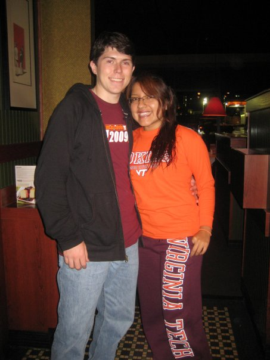
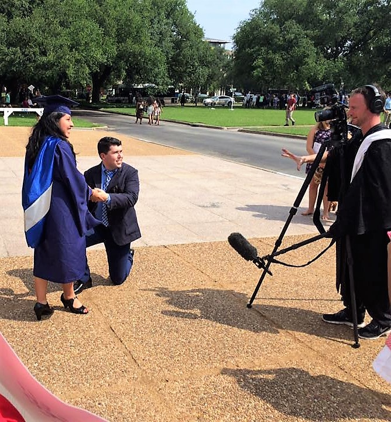
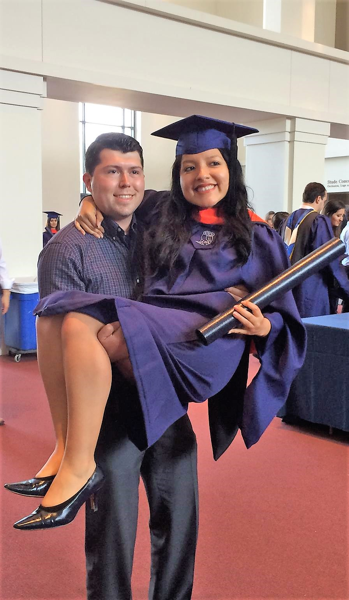

Our story of how we met and what we've been doing since.
We met at Virginia Tech, both of us were invited to play pool by our respective college friends. After playing pool, we went to Krogers to get some food (Yes, we were college students and needed to buy food!). We both spent a lot of time talking about our different backgrounds and the different countries we had visited. It was an instant click! We started going to lunch together at our campus dining halls. It was just a matter of time before we officially started going out.
~ Rosa

Rosa had some pretty strict requirements when it came to becoming engaged. Two requirements had to be satisfied: 1)College degree 2)A full-time job. After accomplishing both, I couldn't ask her to marry me quite yet. I left her wondering when that was going to happen. As Rosa was getting ready to graduate with her Master's degree from Rice University, I managed to put together a banner (which her brother Alex helped me with the design tremendously!) and arrange for most of her family to be present. As Rosa was walking out of her college ceremony, I proposed to her! If you want to see more about our wedding, there is a video from Rice University here.
~ Alex

